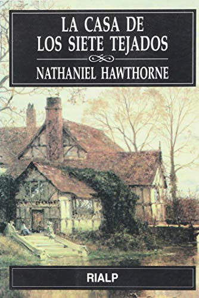
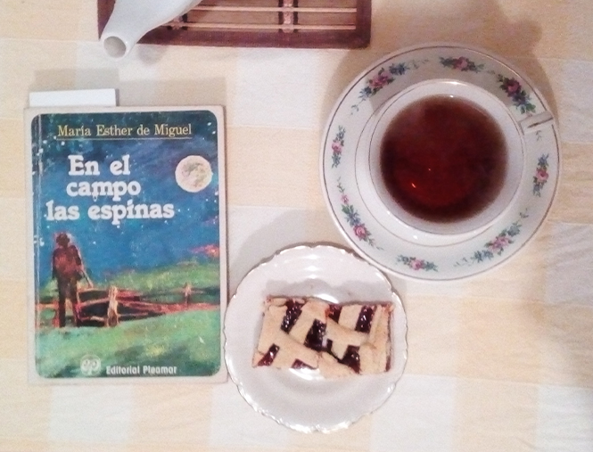

Home
Home Acerca de
Acerca deLectura pendiente
La casa de los siete tejados de Nathaniel Hawthorne

La casa de los siete tejados (The House of the Seven Gables) es una novela de Nathaniel Hawthorne publicada en 1851, generalmente reconocida como la mejor novela estadounidense de este período. Tiene lugar en la casa homónima de Salem, Massachusetts.1
La novela tiene como escenario una casa, indudablemente peculiar, construida en el siglo XVII y ubicada en el centro de Salem, en una pequeña localidad de Nueva Inglaterra. En ella el coronel Pyncheon, de formación puritana, decide construir esta mansión en el lugar donde antes estaba edificada la cabaña de Mathew Maule, del que se dice que era un hombre turbio, oscuro, ya que fue conducido al tormento por acusaciones de hechicería. La mansión está endemoniada, ya que en ella se habían realizado antes distintos ritos de brujería.
El coronel, que preside el juicio condenatorio, no puede disimular unas pretensiones torcidas con ánimo de apoderarse del terreno de Maule. Mientras este es ajusticiado, pronuncia esta frase: “Dios le dará sangre para beber ”. Esta maldición afectará a las siguientes generaciones exponiendo así un gran fatalismo en ellas.
El día de la inauguración de la imponente casa el coronel muere repentinamente. En esta mansión es donde se desarrolla toda la novela.
Los personajes de esta novela son actores de un drama social que va mostrando la ridiculez de las posturas soberbias que desprecian a las personas humildes, quienes piensan y actúan con total libertad, es decir, fuera del orden puritano establecido en la época. Al mismo tiempo la prosa de Hawthorne destaca también el encanto de lo espontáneo, de la expresión personal libre del autor, de las buenas obras e incluso de la seriedad religiosa desarrollada con sincera espiritualidad.
"Si juzgas a la gente, no tienes tiempo de amarla".
El Principito, Antoine de Saint-Exupéry (b. 29 Junio 1900)

María Esther de Miguel
María Esther de Miguel (1 de noviembre de 1925, Larroque, provincia de Entre Ríos - Buenos Aires, 27 de julio de 2003) fue una reconocida escritora argentina.
Hija de un inmigrante español y de madre judía, María Esther de Miguel tuvo vocación por la escritura desde pequeña (a los 8 años ganó un concurso literario por una composición en el colegio).
Luego de recibirse y trabajar como maestra normal en zonas rurales, partió a Buenos Aires y se consagró como laica en la congregación de las Paulinas de la Obra Cardenal Ferrari. Durante ese tiempo estudió letras en la Facultad de Filosofía y letras de la UBA y además recibió una beca para estudiar literatura en Italia. Cuando regresó, abandonó su vocación religiosa.
Trabajó en la justicia y también como periodista. Dirigió la revista literaria Señales, fue directora del Fondo Nacional de las Artes, miembro del Consejo de Administración de la Fundación El Libro y crítica literaria del diario La Nación.1 al igual que en El Cronista Comercial.
En 1961, obtuvo el premio Emecé por su primera novela "La hora undécima" y logró convertirse en una de las escritoras argentinas más leídas, con un promedio de 50.000 ejemplares por obra.
Se destacó por sus novelas históricas, donde buscaba mostrar a los próceres como personas normales, con defectos y virtudes